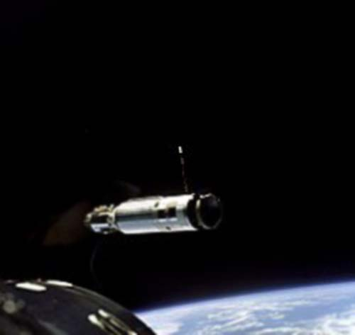
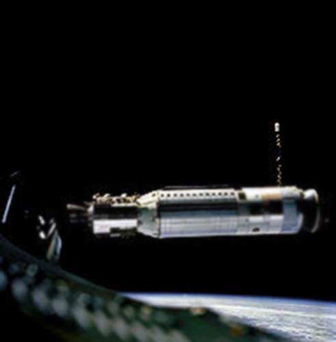

Джемини-8-Аджена
RM-81 «Аджена» RM-81 Agena — американский разгонный блок и платформа обеспечения спутников, первоначально разрабатывался компанией Локхид в интересах программы создания разведывательных спутников WS-117L. После разделения WS-117L на программы разработки спутников фоторазведки SAMOS . и CORONA и программу разработки спутников раннего предупреждения о ракетном нападении MIDAS . «Аджена» стал использоваться в качестве разгонного блока и одного из основных компонентов в нескольких программах, в том числе при выведении на орбиту спутников фоторазведки СORONA и в качестве мишени для отработки сближения и стыковки в космосе с пилотируемыми кораблями по программе Джемини (от Джемини-6A и до Джемини-12 включительно).
В качестве разгонного блока применялся в составе ракет-носителей «Атлас-Аджена», «Тор-Аджена», «Торад-Аджена» и Титан-3B ., также изучалась возможность его использования в программах Space Shuttle[2] и Атлас-5. Всего, начиная с 28 февраля 1959 года, «Аджена» запускался 365 раз, последний запуск состоялся в феврале 1987 года (в варианте Agena D).
RM-81 «Аджена» приспособлен для длительного пребывания в условиях космического пространства с повторными запусками двигательной установки для коррекции орбиты и спуска космического аппарата (не отделяемого от «Аджены» на орбите). Масса ступени с топливом составляет около 7 тонн, тяга жидкостного ракетного двигателя 72 кН.
